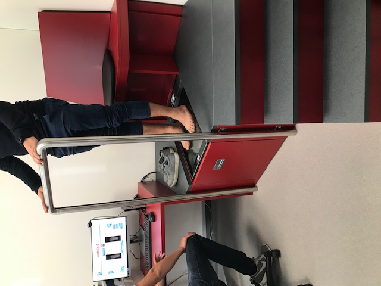

Interdisziplinary Project 2018/2019 Fabrication4Care FabLab Hochschule Rhine-Waal University
Week 2 Visiting the company HODEY
HODEY is a healthcare company. The company has existed for over 45 years and received its success through tradition and experience.
HODEY also stands for innovative customer solutions.
Tasks include counseling and individual care with orthopedic aids in the field of prevention, therapy, mobility and care.
The company continuously invests in the modernization and technical equipment as well as in the qualification of its employees.
HODEY supplies people with temporary or permanent handicaps and manufactures among other things prostheses, insoles for shoes and also wheelchairs, thus ensuring that people can become mobile again.
The products are made of selected materials and of very high quality. Visiting the company:
After a short welcome and some hints, the tour of the Company HODEY started.
The owner presented various products and the machines.
We got an insight into the programs that are used to measure a foot, for example, to adjust an insole.
An employee explains what kinds of soles can be made and that there are qualitative differences. So you can customize everything from sports soles to leather insoles.
At a test person, he showed in detail how the individual steps of the adjustment run.
We were also introduced to the Technick of the 3 D printer. This is used to make a model of a foot. The model will later be needed to make the actual prosthesis.
By accurately replicating the foot, a perfectly fitting and perfect prosthesis can be produced.
After the tour, the owner of the company gave a short presentation about the Company and the work carried out. He explained that he would like to cooperate with the HSRW and our project and what possibilities there are.
The project in cooperation with HODEY is to eventually replace the materials used with better or newer materials. Likewise, to make shoes or other items more attractive.



Week 3 Visiting the company Bacher Innovation
The knitting company Bache already exists in the fourth generation and was founded in 1927 by Otto Bache in Apolda / Thuringia, the former German knitting stronghold.
The company's current location is Rheinberg, the brand "Stick Bache" made a name for itself with women's outerwear.
In 2005, Thorsten Bache took over the company and converted it into a GmbH. Today the company is called "Bache Innovative"
The machine capacity now includes 19 computer-controlled flat knitting machines. Which can be seen in the following pictures.
The production area has been expanded to include technical knits: as you can see in the following pictures, threads made of fiberglass, conductive materials or even stone threads are used.

Week 3 second part CAD Modelling Documentation Introduction to the program Fusion 360
This week, we get an overview of 3D modeling with the Autodesk and Fusion 360 software. We learn the first steps of CAD modeling and 3D printing. Our first task was to create bodies in fusion. We got the possibility to create different shapes. Our task was to create a model at home, which can be put together without glue or other tools. We should then use this model in a 3D printer.

Week 4 3D Scanning and 3D printing
3D printing or additive manufacturing is a process of making three dimensional solid objects from a digital file.
The creation of a 3D printed object is achieved using additive processes. In an additive process an object is created by laying down successive layers of material until the object is created. Each of these layers can be seen as a thinly sliced horizontal cross-section of the eventual object.
3D printing is the opposite of subtractive manufacturing which is cutting out / hollowing out a piece of metal or plastic with for instance a milling machine.
3D printing enables you to produce complex (functional) shapes using less material than traditional manufacturing methods.
To print with a 3D Printer first you have to create a 3D model in your computer. This digital design is for instance a CAD (Computer Aided Design) file. A 3D model is either created from the ground up with 3 modeling software or based on data generated with a 3D scanner. With a 3D scanner you’re able to create a digital copy of an object
Source: https://3dprinting.com/what-is-3d-printing/
Source 3D printer picure: http://www.designtos.com/post_cad-software-for-3d-printing_186738/


Week 5 3D Laser Scanning, Modeling, Processing images and Cutting materials
Demonstration of three-demensional laser scanning techniques with application in engineering practice Conversion on 3D scanned object in CAD format Comparison on scanned 3D object with CAD model This week we will learn more about 3D scanning and editing these models. A volunteer got his arm scanned.
After scanning the body part, we learned how to modify the scan.
Expanded by the extension of the program Fusion with new functions and converted with the program Meshmixer into the correct format.
Through the various programs we were able to change the representation of the models by using different constructions and modifying them in different ways.